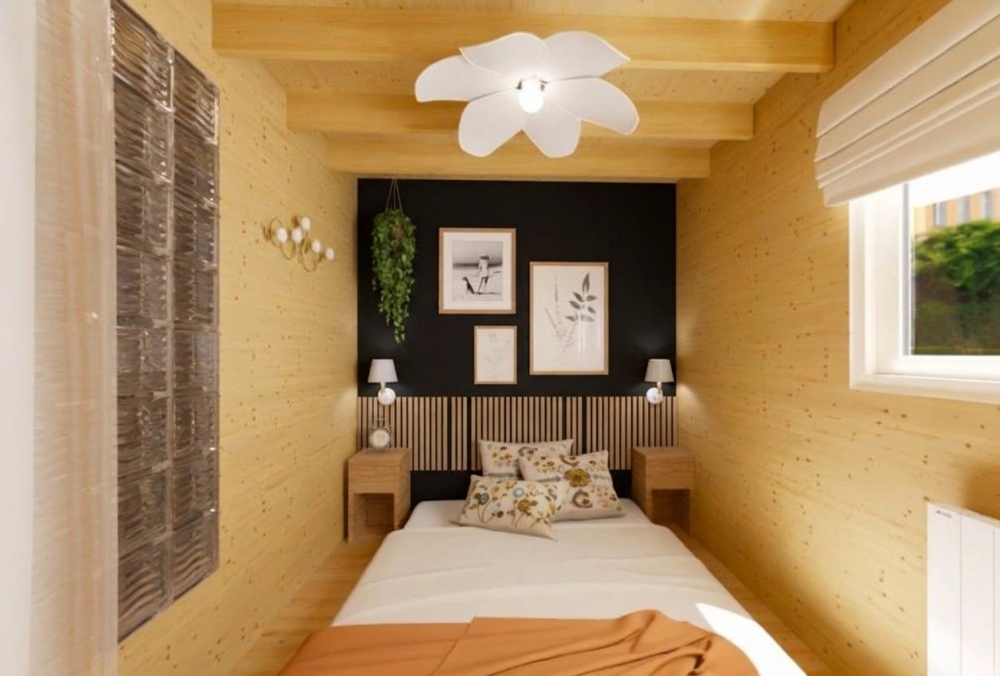

La chambre
- Mur de tête de lit noir. Il fait ressortir le bois clair des murs et sert de fond aux cadres. À valider
- Bande de tasseaux de bois derrière le lit, sous le mur noir : une touche chaleureuse et décorative. Produit envisagé : panneaux acoustiques muraux en bois véritable (lot de 8, 120 × 60 cm, chêne, feutre insonorisant, découpables). À valider
- Deux tables de chevet en bois clair, non fixées : elles se déplacent quand les deux sommiers sont séparés. Une applique à abat-jour de chaque côté permet de lire au lit. À valider
- Suspension blanche en forme de fleur posée entre les poutres apparentes du plafond : le point de décoration central de la pièce. À valider
- Trois cadres et une plante retombante au-dessus du lit, pour habiller le mur noir sans le charger. À valider
- Textiles chaleureux : coussins à motifs de fleurs, plaid orangé, linge de lit blanc. À valider
- Petite applique dorée à boules sur le mur de gauche, en complément des liseuses. À valider
- Store à rabat crème sur la fenêtre de droite, qui adoucit la lumière. À valider
- Panneau vitré texturé (type brique de verre) à gauche du lit : à confirmer, l'image ne dit pas ce que c'est. À vérifier
À vérifier sur le chantier : les murs de l'image ressemblent à des panneaux de bois clair, alors que les murs du studio sont en OSB (voir l'article du 24 octobre). L'effet obtenu sera peut-être différent.